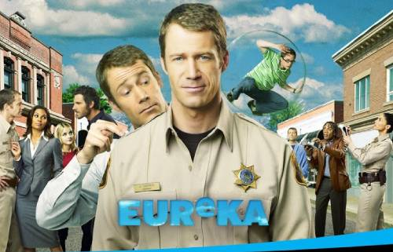

This is a loose sci-fi comedy with a little drama and a lot of charm that aired on the Syfy
channel from 2006-2012.
The main character, Jack Carter, accidentally crashes his car near Eureka, Oregon, and discovers a secret
town.
Created by the government, Eureka hides the world's craziest smartest scientists and a massive tech
facility named Global
Dynamics.
After helping save the town from a rogue experiment, Carter is hired as the new Sheriff. He is a regular guy surrounded by eccentric geniuses. While scientists build force fields and time machines, things constantly go wrong. Carter uses simple common sense to stop these advanced inventions from destroying the town or the entire world.
The main cast includes Allison Blake, a strong-willed government agent and medical doctor, and Nathan Stark, the charismatic Global Dynamics Director. There is also Henry Deacon, a brilliant mechanic who can fix any machine; Jo Lupo, a tough deputy who loves big guns; and Douglas Fargo, a clumsy but lovable scientist. Together, they face memory loss, parallel universes, and evil conspiracies. Through all seasons of chaotic science disasters, Carter protects his teenage daughter, Zoey, and grows to love his quirky neighbors.
I didn't watch the show when it originally aired but feel so fortunate that I stumbled onto it. The chemistry between the actors is fantastic, so the comedic and dramatic scenes play out extremely well. I also love it when a show gives closure at the end of its series, and Eureka does a wonderful job.
I have rewatched this show so many times that I only need to hear it, and I can see the scenes in my mind. I stream the episodes constantly on my phone and listen (with an earbud) in the background. I highly recommend Eureka to anyone who enjoys silly but charming shows.